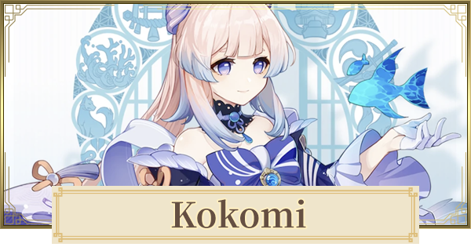

XI RPL SMK KETOPONG
Photo of Me:

Sangonomiya Kokomi merupakan sang pendeta suci di pulau Watatsumi. Gelar pendeta suci ini diberikan kepada garis keturunan keluarga Sangonomiya, sebagai titisan Orobaxi, sang dewa pelindung pulau Watatsumi.
More text
daftar gambar profile